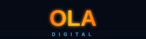
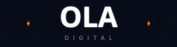
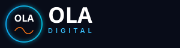
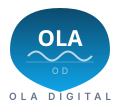
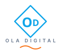

Brand
Toolkit
Todo lo que necesitás para usar la marca OLA Digital de forma consistente y profesional.
El logo
El logo de OLA Digital está compuesto por el wave mark (badge con tres ondas) y el wordmark (OLA + DIGITAL). No se deben usar por separado salvo el ícono en contextos muy reducidos.
Variantes en diferentes fondos
Reglas de uso
✓ DO
- Use on white or very light backgrounds
- Use logo-white.svg on dark or coloured backgrounds
- Maintain clear space equal to the height of the 'O' on all sides
- Scale proportionally — never stretch or squish
- Use logo-icon.svg when space is limited (app icons, favicons, profile pics)
✗ DON'T
- Don't change the logo colours
- Don't add drop shadows, outlines or glows to the mark
- Don't place the colour logo on busy photos without a white backing
- Don't rotate or skew the logo
- Don't use the logotype without the wave mark beside it
Variantes de logo
Cuatro variantes SVG generadas por Claude + un concepto de imagen AI. Todos vectoriales y editables.

Dark + horizon line — OLA sunset

Dark hexagon grid — OLA electric white
Dark stacked — OLA cyan-to-blue grid

Dark circle emblem + wordmark
Hexagon mark + OLA horizontal
Bold O lettermark + wave inside

Shield/crest — OLA inside shield
Diamond refined — gradient fill
Neon glow — dark electric
Circle O wave mark
Bold stacked + orange accent
Pill badge — gradient capsule
Signal arcs + orange dot
Retro synthwave grid

OD monogram diamond
Split color O·L·A + digital
Concepto AI (Pollinations)
Colores
La paleta de OLA Digital está inspirada en el océano — del azul profundo al cian brillante. El naranja mandarina aporta energía y urgencia.
Gradiente de marca
linear-gradient(90deg, #0C4A6E → #0369A1 → #0EA5E9 → #06B6D4 → #38BDF8)
#0369A1Primary DarkHeadlines, deep backgrounds#0EA5E9PrimaryButtons, links, accents#06B6D4Primary LightHighlights, gradients#38BDF8TintHover states, light backgrounds#F97316AccentCTAs, urgency, warmth#F59E0BAccent AltBadges, stars, highlights#0F172ADarkBody text, dark backgrounds#334155MidSecondary text, dividers#94A3B8SubtlePlaceholders, disabled states#F0F9FFBackgroundSection backgrounds, cards#FFFFFFBasePrimary background, text on darkTipografía
Dos familias: Plus Jakarta Sans para impacto visual, Inter para legibilidad en UI y cuerpo de texto.
negocios en internet.
en Olavarría, Buenos Aires.
Escala tipográfica
| Token | Size | Weight | Uso |
|---|---|---|---|
display | 3.75rem / 60px | 800 | Hero headline |
h1 | 2.25rem / 36px | 800 | Page title |
h2 | 1.875rem / 30px | 700 | Section title |
h3 | 1.25rem / 20px | 700 | Card title |
body-lg | 1.125rem / 18px | 400 | Lead paragraph |
body | 1rem / 16px | 400 | Body copy |
small | 0.875rem / 14px | 500 | Secondary info |
caption | 0.75rem / 12px | 600 | Labels, badges |
Voz de marca
Cómo habla OLA Digital. Cuatro atributos que definen el tono en redes, web y comunicaciones.
Cercano
Hablamos como vecinos, no como corporaciones. Tuteamos siempre.
Directo
Sin tecnicismos innecesarios. Si podés decirlo en menos palabras, hacelo.
Confiado
Sabemos lo que hacemos. No pedimos disculpas por nuestra opinión.
Local
Mencionamos Olavarría por nombre. Conocemos el barrio. Eso es ventaja.
Sistema de espaciado
Basado en múltiplos de 4px. Usar siempre valores de esta escala para mantener consistencia visual.
Archivos del logo
Todos los archivos SVG son vectoriales — escalables a cualquier tamaño sin pérdida de calidad.
| Archivo | Nombre | Uso | |
|---|---|---|---|
logo.svg | Logo completo | Uso principal — fondos blancos y claros | ↓ Descargar |
logo-white.svg | Logo blanco | Fondos oscuros, fotos, colores sólidos | ↓ Descargar |
logo-icon.svg | Ícono / badge | App icon, WhatsApp, redes sociales, favicon | ↓ Descargar |
favicon.svg | Favicon | Pestaña del navegador | ↓ Descargar |
{kind=link}
{kind=link}
{kind=link}
{kind=link}